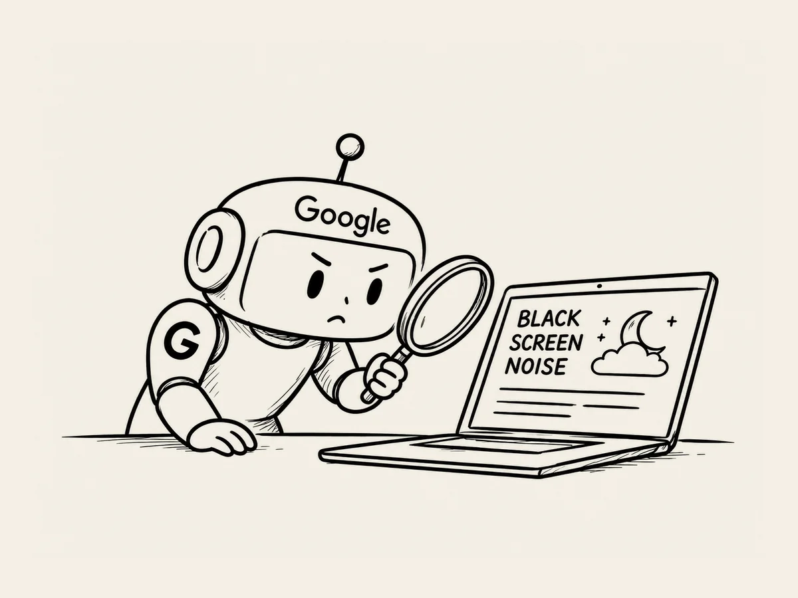

13.
검색로봇의 고민을 내가 왜 하고 있지?
웹 사이트를 만들면서 점점 깊이 들어가기 시작했다.
처음에는 단순하게 시작했다.
내가 뭔가 유용한 걸 만들어 놓으면 구글이 필요한 사람에게 연결해준다.
나는 그 말을 믿고 웹 사이트를 만들기 시작했다.
그런데 만들다 보니 새로운 궁금증이 생겼다.
구글은 내 웹 사이트가 뭔지 어떻게 알지?
AI에게 물었다.
“구글 검색로봇은 내가 만든 사이트가 뭔지 어떻게 알아?”
설명을 듣다 보니 구글의 검색로봇이 인터넷을 돌아다니며 웹페이지를 발견하고, 그게 어떤 페이지인지 파악한다는 거였다.
또 궁금해졌다.
“그럼 검색로봇이 내 사이트에 들어왔는데 이게 뭔지 잘 모르면 어떡해?”
“검색엔진이 페이지의 내용을 이해하기 쉽도록 명확하게 만들어주는 것이 좋습니다.”
그렇겠네.
사람에게 보여주는 것만 생각했는데, 검색로봇에게도 내가 뭘 만든 건지 잘 알려줘야 하는 거구나.
제목은 어떻게 써야 잘 알아볼까?
설명은?
페이지 주소는?
화이트 노이즈라고 정확하게 써주는 게 좋을까?
블랙스크린이라고도 알려줘야 하나?
생각할 게 또 생겼다.
그러다가 문득 웃음이 나왔다.
며칠 전까지만 해도 나는 웹이 뭔지도 잘 몰랐다.
그런데 지금은
구글 검색로봇이 내 웹 사이트를 보고 무슨 생각을 할지 고민하고 있다.
